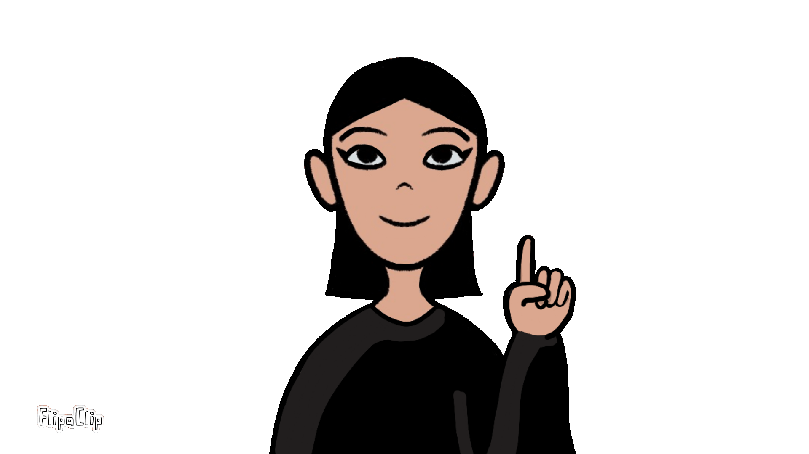

Misión Bienestar
Este juego interactivo permite a los trabajadores reconocer los principales factores de riesgo psicosocial presentes en su entorno laboral, comprendiendo cómo influyen en su bienestar físico y emocional. A través de situaciones reales, deberán identificar riesgos, elegir acciones de prevención y descubrir cómo estos pueden desencadenar enfermedades como el estrés laboral crónico. El objetivo es aprender de manera dinámica y participativa a mejorar las condiciones de trabajo y promover ambientes laborales saludables. 🎮

¡Nivel completado!
Puntaje: /5